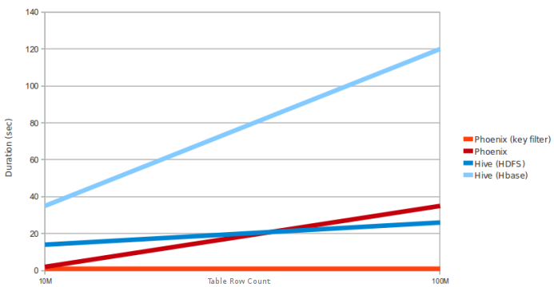

6 索引性能测试
索引到底能对性能有多大提升呢？
我们来看一张官方的图（Phoenix 与 Hive 性能对比）：

可以发现这里加索引的 Phoenix 与不加索引的 Phoenix 在查询速度上有差了不是一个数量级，而 Hive 的主要功能是做离线分析的，所以这个速度在可接受的范围。
看了官方的例子，我们自己也可以做一个测试：
在 2核8G 内存的机器上进行查询性能测试，查询语句如下：
select * from USERS where NAME = '李雪梅';
不建立索引的情况下：
500万条记录，十次查询取平均值：30.40191 秒
1000万条记录，十次查询取平均值：43.69728 秒
在 NAME 字段上建立索引后：
500万条记录，十次查询取平均值：0.14245 秒
1000万条记录，十次查询取平均值：0.5676 秒
可见索引对Phoenix性能的提升作用是无可替代的。